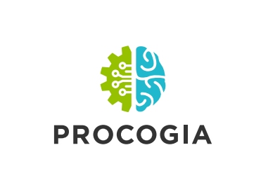

2020-08-20
Photo by Markus Spiske on Unsplash
This is a guest post from RStudio’s partner, ProCogia
Thanks to our vibrant and engaged community, R is continually evolving as successful open source software. It’s exciting to have frequent releases and refinements to our favorite tools, but this also can present challenges to maintaining the integrity and reproducibility of our work. When new tools and packages are released, useRs like to tinker and stay on the cutting edge, but we don’t want our experimental playground to break our important workflows. We like to collaborate, but when package versions collide, this can lead to problems ranging from error messages and frustration to silent bugs and unexpected code behavior.
For other stakeholders in the wider organization, these frequent updates present related challenges. For data science leaders, they may struggle with how to make sure their team has access to the latest methods, while still consistently delivering reproducible results to the rest of the organization. For IT and DevOps, they may feel inundated with requests to constantly update, validate, and maintain production systems delivering data science applications.
renv package helps create reproducible project environmentsTo address these sorts of challenges, users of other programming languages are likely familiar with virtual environments and project management tools, but analogous best practices have not seen widespread adoption within the R community. Enter renv, a new package for reproducible environments in R that:
I recently co-hosted a webinar on upgrading to R 4.0 and package management with renv. In preparation, my co-host and I worked on the same set of RMarkdown-based xaringan slides, and shared our code on GitHub. Ironically, we hadn’t checked to make sure we were using the same version of R, nor did we use any package management tool to ensure consistent package versions. Surely we didn’t need any fancy tools for such a simple set of slides? Wrong! The night before our presentation, I compiled the slides and discovered the formatting was completely mangled. The next morning we decided to practice what we were about to preach, and incorporated renv into the project and switched to using R 4.0. Presto, the slides compiled perfectly.
This formatting issue was easy to detect, and although the mangled slides were not exactly professional looking, it was a relatively harmless bug. Not all bugs are. An environment management tool such as renv is essential to keeping exploratory and side projects isolated from sensitive or business-critical work, and ensuring reproducibility and accuracy.
Incorporating renv into either a new or existing project is straightforward:
renv will automatically detect your package dependencies, or you can choose to start with a blank slate.renv packageThe renv package is compatible with almost anywhere your team gets their packages (CRAN, Github, RStudio Package Manager, the recently introduced RStudio Public Package Manager, GitHub, BioConductor, GitLab, BitBucket, custom local packages…). For teams familiar with Python, the workflow will feel familiar, and renv also integrates with pipenv and reticulate for multilingual projects.
Ultimately, why would I recommend renv over other options?
renv doesn’t re-install the same version of a package if already installed for another project.renv improves upon deficiencies in Packrat, a previously existing package manager for R.renv is highly compatible with various ways to source and manage your packages.About ProCogia:
An RStudio Full Service Partner, ProCogia is based out of Seattle, Washington. Our consulting capability extends to building, deploying, and supporting scalable data science solutions for our clients. We are passionate about developing data-driven solutions that provide highly informed answers to your most critical questions.